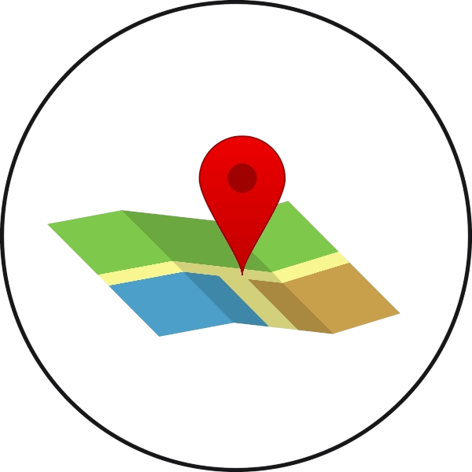
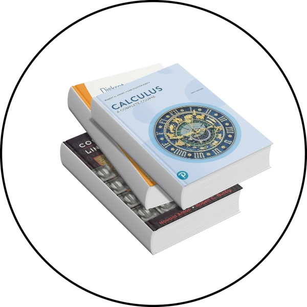
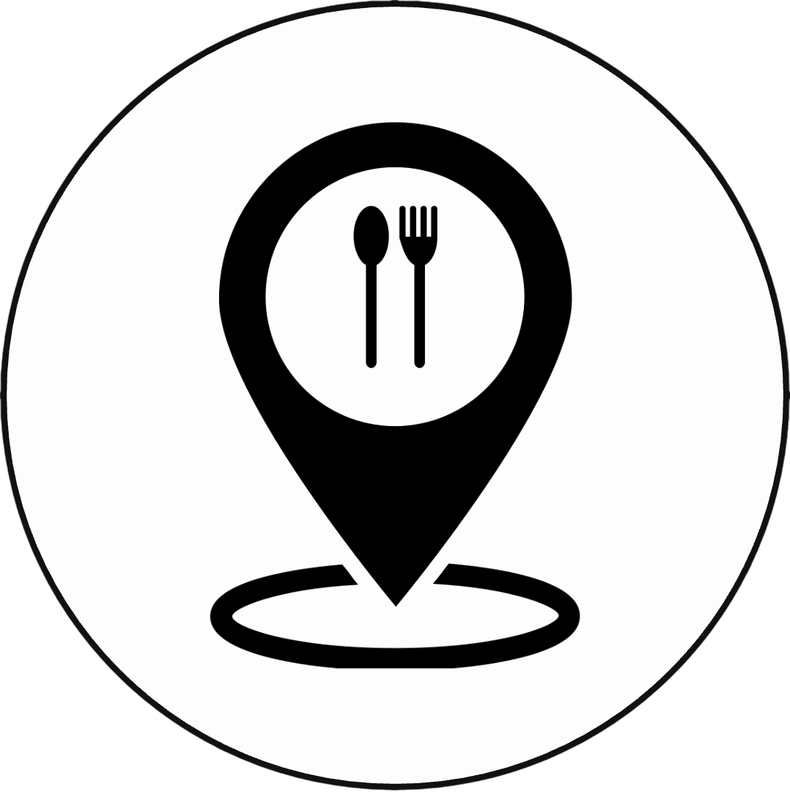

Buildings, study rooms, 50 restaurants and campus essentials in one place. Built to make everyday movement across campus feel simple.
What you can do
Three focused tools built around how students actually move, meet, eat and study across campus every day.

Interactive campus map with buildings, sections, microwaves, printers, restaurants and direct navigation.
Open Map
Browse live availability and jump straight to bookable group rooms without extra steps.
View Rooms
Discover 50 restaurants, cafes, kiosks and student hangouts across KTH, Albano and nearby campus areas in one clear overview.
View Restaurants